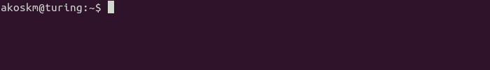
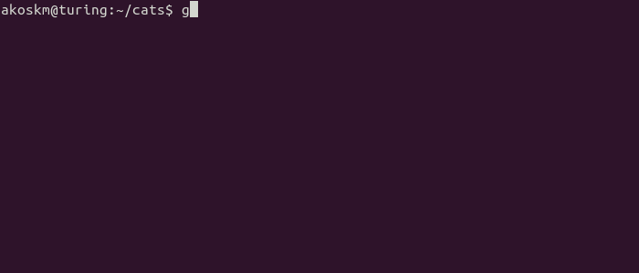

git workflows can be divided into these categories:
If you don't have access to any git repository you create a fresh one to play around with. Open up the terminal and create a new directory:
mkdir cats
after entering
cd cats
initialize a new git repository:
git init
As simple as that!
Time to make some changes! Let's say you changed a webpage. Typing git status will always show you the current status of your working directory.
git status
As you see git already knows that index.html is changed. Let's save your modifications!
In order to save modifications you have to create a commit. Putting together a git commit is just like shopping. You decide what goes into your shopping basked and what doesn't.
Use git add to put a changed file into your commit:
git add index.html
The commit is wrapper and now we are ready to record the selected changes.
git commit -m "awesome marketing text"
Commits are created along with a log message which describes the changes made in that commit.
git pull origin
git push origin